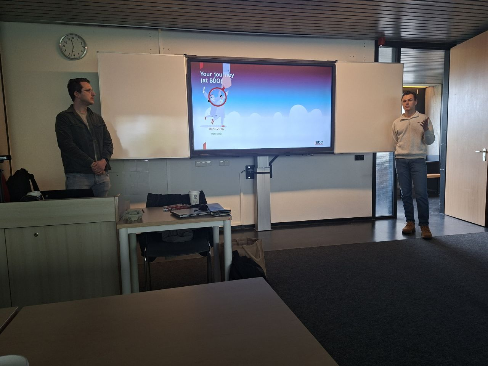
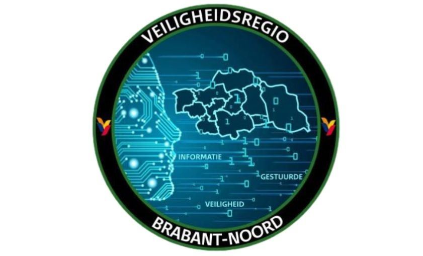

IM Student Corner
Stay connected with what’s happening across your MSc programmes. From news and events to student achievements and key announcements, this is your central update space.
Submit news by email to the academic directors for consideration.
Submit news by email to the academic directors for consideration.
-
Highlights from Our MSc Open Day Presentation
We recently hosted our MSc Open Day at Tilburg University, where we had the pleasure of presenting our Master’s programme in Information Management to prospective students. Attendees learned how the programme prepares future leaders for data-driven organisations, with a focus on AI, innovation, and strategy. Registration is now open for the “Intelligence and Innovation” track — explore what makes this MSc experience unique and exciting.
More on LinkedIn : Highlights from Our MSc Open Day PresentationNov. 2026Master Experience Session
Today we had this year's Master Experience. Academic Director Ekaterini Ioannou opened the session with an overview of the programs and tracks, highlighting the blend of business and technology in information management. This was follwed by an interactive session by BDO Nederland, featuring alumni Pepijn Verhoef and Alwin van Welie, who showed how the program translates into real-world practice.
More on LinkedIn : Highlights from Our MSc Open Day Presentation
Apr. 2026Celebrating Semester Success & UN Case Study
After successfully completing his first semester at Tilburg University, Furkan Karaca (with Stella Peignier, Valentin Chifflot, and Paul Vignes) conducted a case study on digital decision‑making at the United Nations. The project highlighted how governance, skills, and alignment drive digital transformation in complex, decentralized environments.
More on LinkedIn : Highlights from Our MSc Open Day Presentation
Jan. 2026Master Experience Session
Today we had this year's Master Experience. Academic Director Ekaterini Ioannou opened the session with an overview of the programs and tracks, highlighting the blend of business and technology in information management. This was follwed by an interactive session by BDO Nederland, featuring alumni Pepijn Verhoef and Alwin van Welie, who showed how the program translates into real-world practice.
More on LinkedIn : Highlights from Our MSc Open Day PresentationApr. 2026